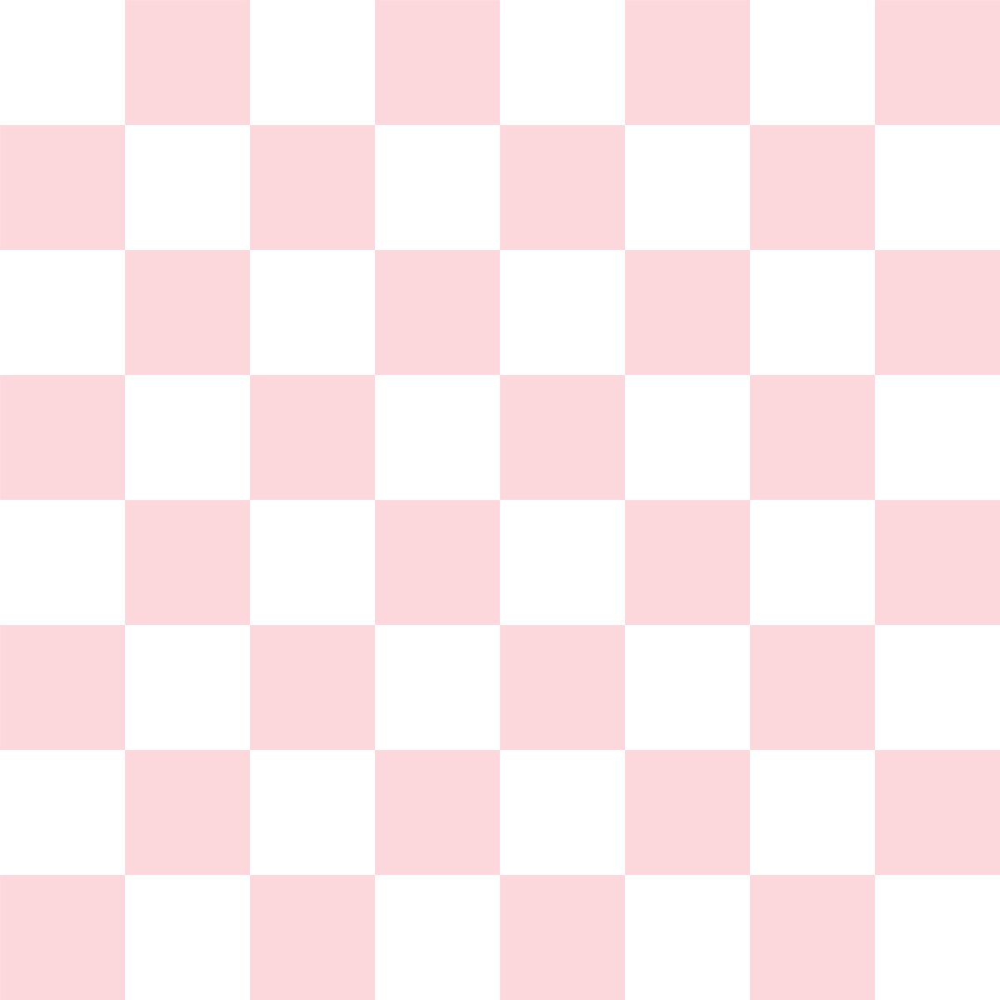

We were asked to come up with two examples of pseudo code. One set of tasks was made for a material task. The other set of tasks was made for javascript comments.
It was difficult for us to isolate the most essential steps towards doing a kickflip.
1. Get a skateboard a. Popsicle shape deck b. Hard wheels 2. Learn to push a. Figure out skateboard stance b. Place your back foot adjacent to your front foot, and push off the ground c. Repeat until you feel comfortable 3. Learn how to ollie a. With your back foot, push down on the tail to pop. This gives the board upward momentum. b. Jump with the board. c. Immediately after popping, scrape your front foot towards the board’s nose d. Stay over the board while airborne. e. Position back foot behind the bolts. Position front foot just behind the other set of bolts. 4. Learn how to kickflip a. Position back foot at the tail and position the front foot behind bolts b. Pop the tail with back foot and slide while hitting the pocket c. Jump up and wait for the board to rotate lengthwise 360 degrees before landing
// Print 8x8 board // Print pieces // Set rules for how pieces move // Check for legal moves // Check for checkmate/stalemate // If checkmate/stalemate, game ends // Set boolean for turns // True: White (White moves first) // False: Black // Accept user input by dragging a piece to a different square. // After White moves, set boolean to False // Black moves